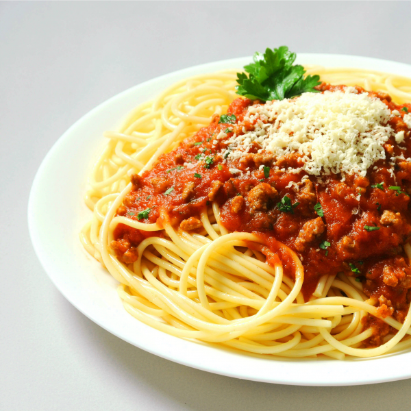

Spaghetti

Anak kecil siapa coba yang tidak menyukai pasta, pasti anda juga setuju dengan pertanyaan yang satu ini. Namun anda bisa mengakali menu favorit mereka ini dengan menambahkan bayam atau jamur di dalamnya. Berikan keju juga boleh kok bund
Dengan berbagai kemudahan yang sudah disediakan, kini anda tingga membeli spaghetti siap saji. Ditambahkan dengan saus Bolognese, spaghetti anda akan terasa sungguh nikmat sebagai teman menghabiskan waktu malam anda bersama keluarga.
Bahan-bahan yang dibutuhkan125 gram spaghetti instan / siap saji
Daging giling sesuai selera
50 gram keju parut
2 buah bawang Bombay diiris tipis
2 buah tomat merah diblender
3 sendok makan saus tomat
2 sendok makan tepung maizena
Air secukupnya
Garam secukupnya
Gula secukupnya
½ sendok teh lada bubuk
½ sendok teh oregano kering
Minyak zaitun dan minyak goreng secukupnya
Cara Membuat Saus Spaghetti:
1. Tumis bawang Bombay dengan minyak zaitun..
2. Masukkan daging cincang secukupnya.
3. Tuang tomat yang sudah diblender. Aduk hingga rata.
4. Tambahkan gula dan garam. Aduk lagi.
5. Tambahkan daun bawang. Aduk rata.
6. Masukkan tepung maizena supaya saus sedikit mengental. Angkat dan tuang di atas spaghetti..
Cara Membuat Spaghetti
1. Didihkan air dan rebus spaghetti instan di dalam 400 ml air.
2. Masukkan garam dan tunggu hingga spaghetti berubah kenyal.
3. Masukkan minyak zaitun untuk beberapa saat. Angkat dan tiriskan.
4. Spaghetti Bolognese sajian anda telah siap untuk disajikan dengan saus dan parutan keju di atasnya.